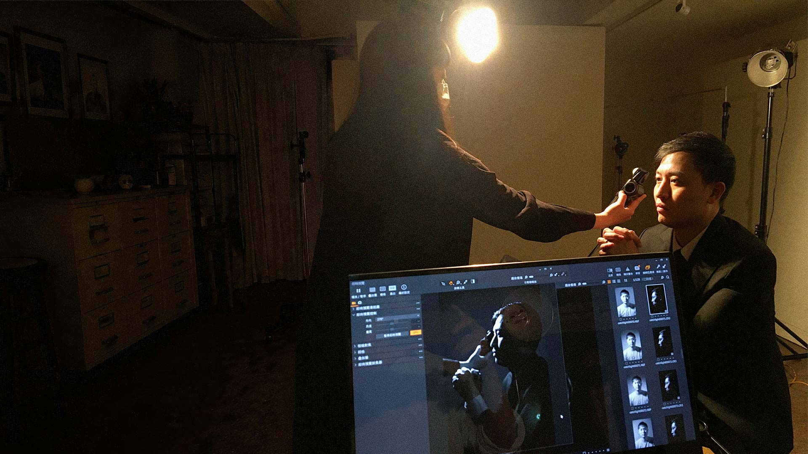

階調控制能力
理解照度、輝度、曝光量之間的關係。不再只靠試拍調整，而能精準控制影像階調。

突破困境
許多攝影愛好者拍攝人像時，最常停留在平光。知道如何把人物拍亮，卻不知道如何創造不同的光影氛圍？如何讓影像產生質感與情緒？另一方面，許多影像工作者在與攝影師、客戶，甚至AI影像生成工具溝通時，知道自己想要某種感覺，卻缺少精準描述它的視覺語彙。結果只能依靠猜測、膽勢，和付出昂貴的溝通成本。這堂課將建立一套從「感受」到「視覺」的轉換方法：一步一步帶你將氛圍轉化成可以控制的影像。
學習方式
這堂課是透過「感受 → 視覺分析 → 技術實現」的方式，建立真正理解光線的方法。課程中，我會透過提問與討論，引導你描述一張影像帶來的感覺：這張照片為什麼讓人感覺優雅？為什麼這個光線具有戲劇性？接著從視覺層面分析：階調變化，明暗比例。最後進入技術層面：如何選擇控光配件，安排燈位，控制曝光。讓你從感覺得到，進一步到做得到。
課程收穫
理解照度、輝度、曝光量之間的關係。不再只靠試拍調整，而能精準控制影像階調。
理解光比大小如何影響：
學習三大佈光系統，包含：
看到一張作品時，能夠反向分析：使用什麼光線？光源從哪裡來？光比如何控制？使用什麼控光配件？如何再現效果？從臨摹大師作品，走一次大師走過的路。

開課日：
YYYY/MM/DD

剩餘名額: Y人

報名截止日：
YYYY/MM/DD

3～6人小班制

3人以上開課

費用包含：
場地使用費
燈具使用費

自備可手動曝光
的數位相機

自備等效焦長
50–85mm鏡頭

自備筆電並安裝
Capture One 或
Lightroom Classic
可以。
只要具備基本曝光概念，理解光圈、快門、ISO即可。課程會從觀看與分析開始，逐步建立光線控制能力。
適合。
如果你知道如何拍攝，但不知道如何創造不同光線效果，這堂課會幫助你建立從感受到控制的方法。
會。
但重點不是記住燈的位置。而是理解：為什麼這樣配置會產生這樣的影像效果。
人像創作體驗課：
觀看攝影師如何完成一次完整創作，了解創作流程與整合方式。
棚內肖像打光工作坊：
深入學習光線系統，建立控制與重現光線的方法。
不用。
課程提供燈具與場地使用。
點擊立即報名按鈕後填寫報名表。確認開課日期與名額後，會收到付款資訊。款項經確認入帳後即保留名額，名單與順位以確認收款的時間為準。
目前提供銀行轉帳方式。
報名截止日（開課日前第 11 日 23:59）以前取消，可全額退費，或改報下一梯次，不須重新付款。
報名截止後至第 3 堂開始前取消：退還學費的 50%（NT$10,000）。開課前也可以把名額轉讓給他人（限一次）。
第 3 堂開始起，不退費，也不接受改期或轉讓。
若未達開課最低人數而無法開課，可全額退費，或免費改報下一梯次。
因小班制與Model、場地安排，課程無法補課。前一日以前以電子郵件或班級群組請假者，可獲得該堂課的全程錄影，於課後 30 日內供本人觀看，不得轉傳或公開。未事前請假而缺席者，不提供錄影。
依課程內容安排。可能於：老師工作室，租用攝影棚，合作場地或外景。開課前提供詳細地址。